Bare dirtto freshgreen grass.
Tarrant Landscaping provides sod and drainage solutions for the Abilene and DFW area, plus landscaping, fences, concrete and tree work.
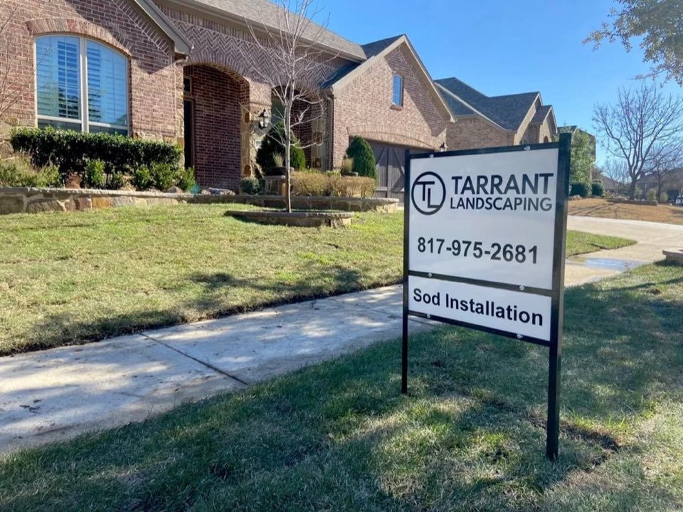
- Sod installation
- Drainage solutions
- Landscaping & design
- Fences & gates
- Concrete
- Tree trimming & removal
Years in business
Ways to get an estimate: virtual or in person
Deposit orders materials & books your date
Ways to pay: cash, check, card, Venmo, Zelle
Yard work, start to finish.
Sod is the specialty, and it says so on the yard sign. The rest of the list covers what usually comes with it.
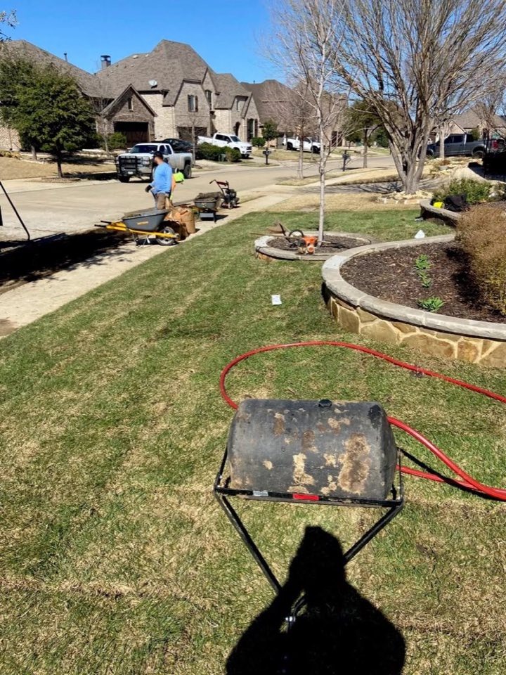
Sod installation
New grass laid onto bare soil or over a tired lawn, with the old grass and weeds cleared first when needed.
Learn moreDrainage solutions
Water that sits in the yard or heads the wrong way. Ask about it with your estimate.
Learn more 03Landscaping & design
Outdoor landscaping and design for front and back yards.
Learn more 04Fences & gates
Fence and gate installation for residential properties.
Learn more 05Concrete & trees
Patios, porches, driveways and sidewalks, plus tree trimming and removal.
Learn moreSame strip of yard. One job later.
Shady ground under the oaks, cleared and prepped, then covered in new sod right up to the sidewalk. Drag the handle to compare.
Both photos come from Tarrant Landscaping’s own job pictures.
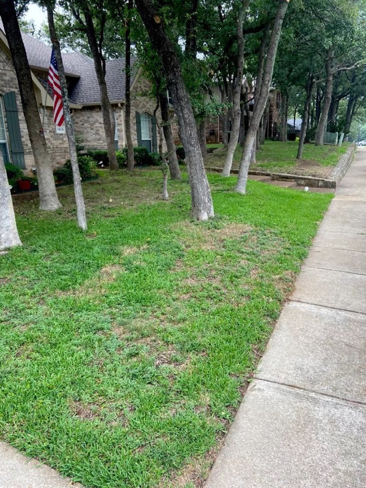
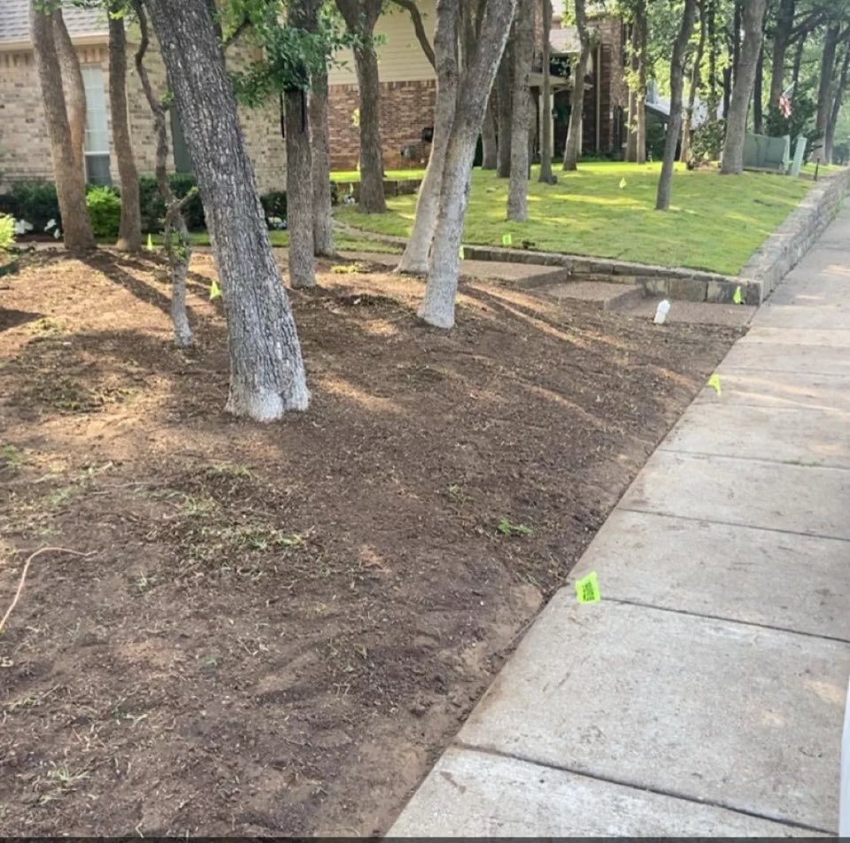
BeforeAfterFour steps, no guesswork.
This is how Tarrant Landscaping describes working with a new customer.
Estimate
Virtual or in person, whichever is easier for you.
Approve & deposit
Once you approve the estimate, a 50% deposit orders the materials.
Install day
The deposit also locks in your installation date.
Pay the rest
The remaining balance is due when the job is complete.
From the job site.
Real photos from Tarrant Landscaping jobs: prep, pallets, rolling and the finished lawn.
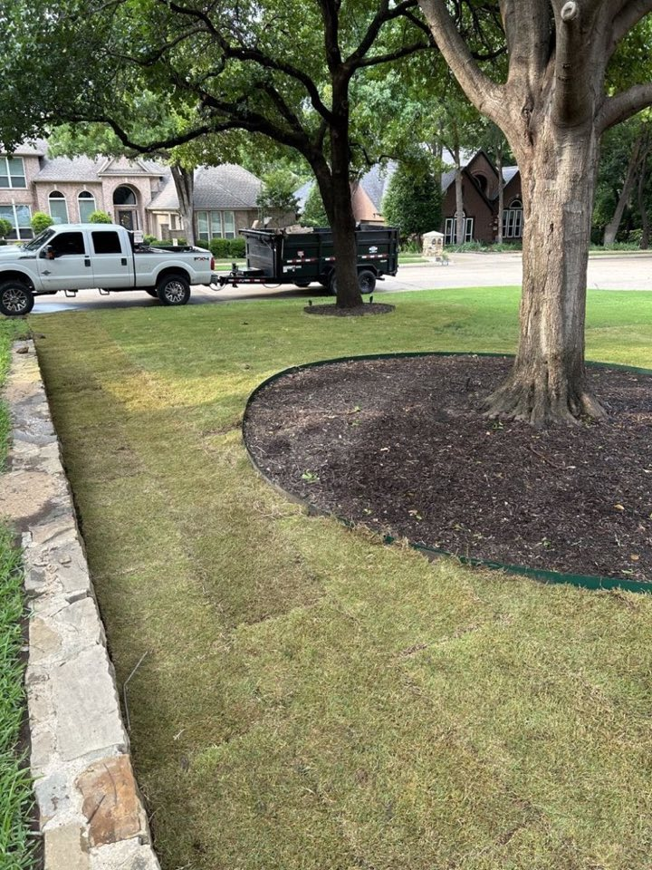
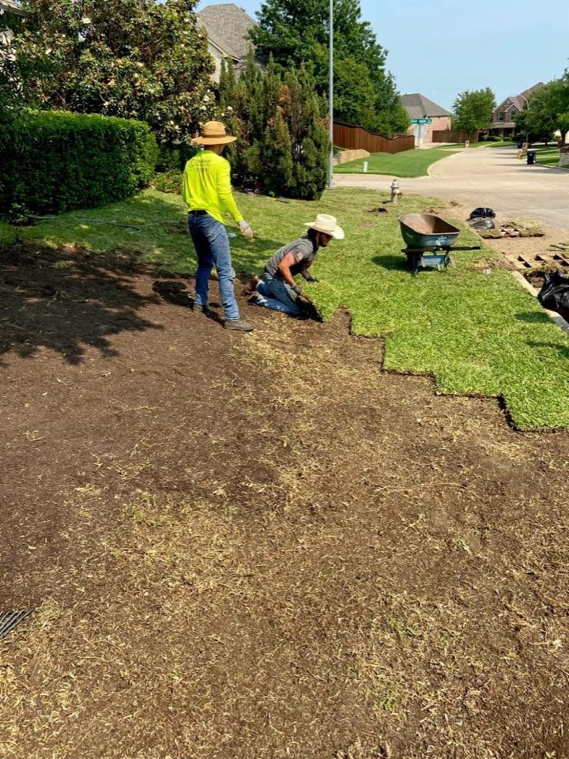
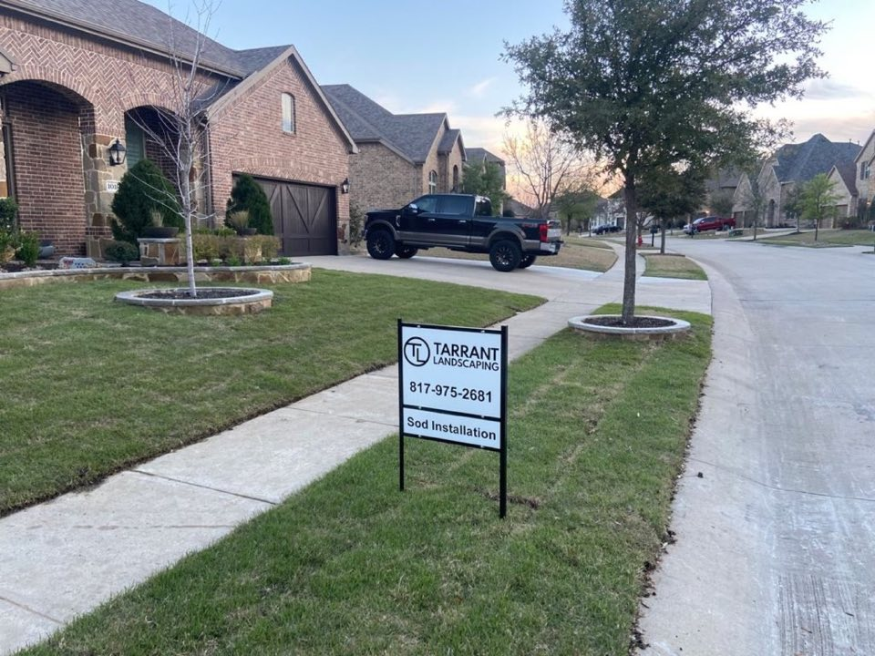

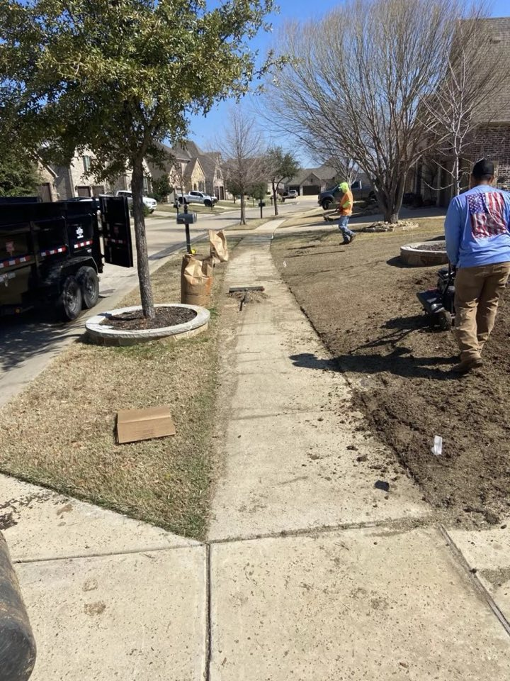
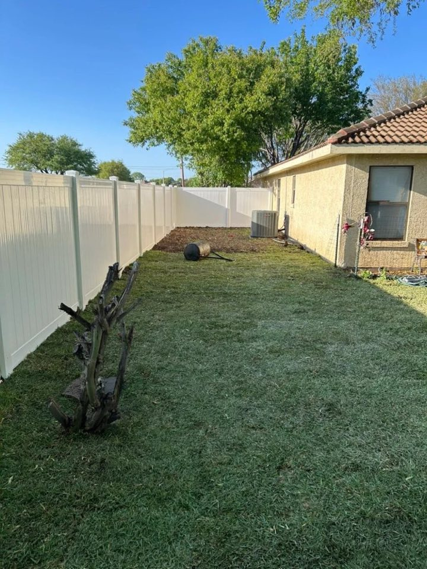
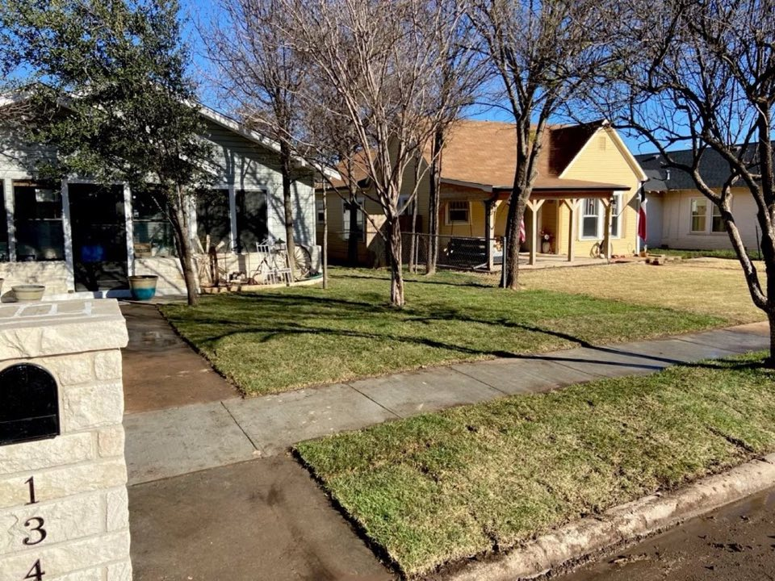
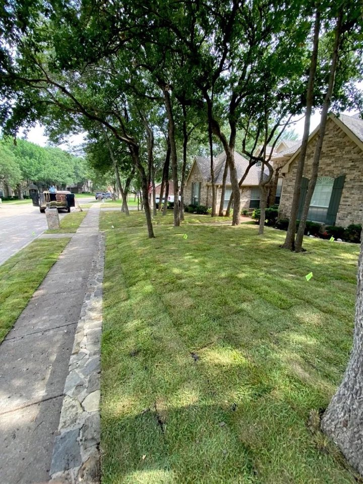

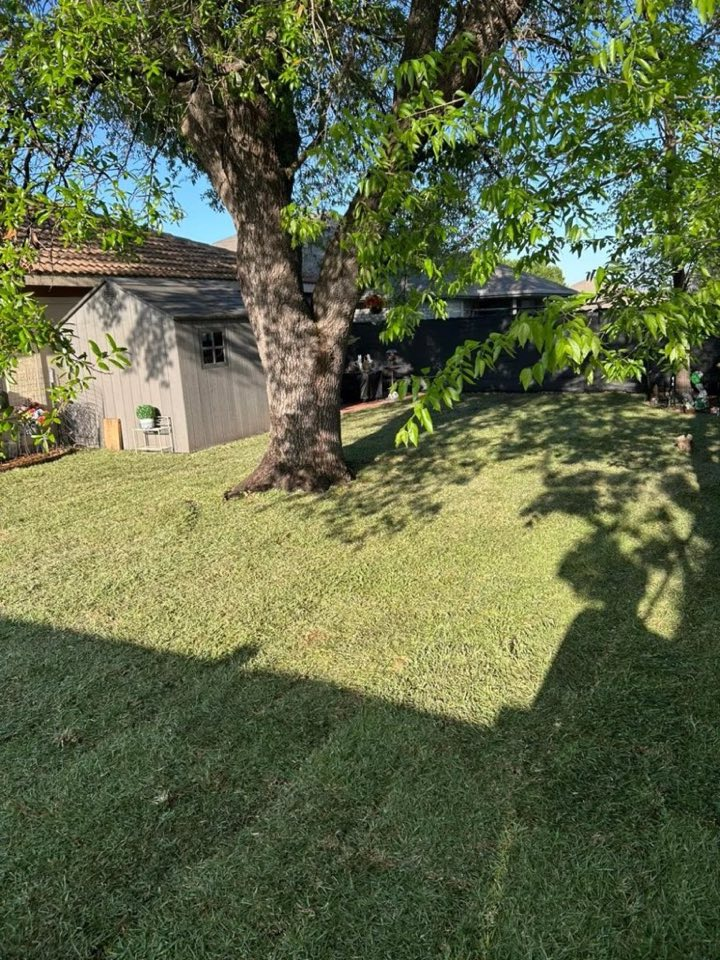
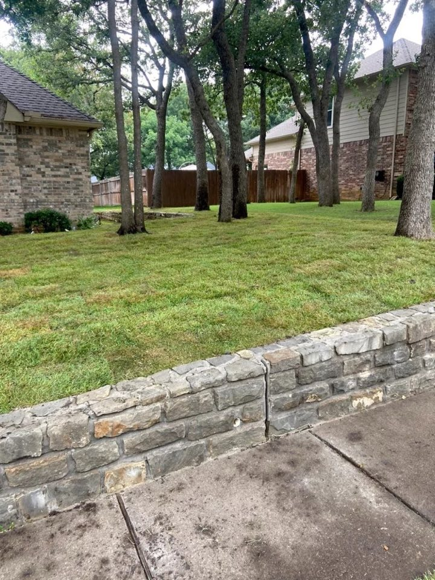
A sod and drainage outfit for Abilene and DFW.
Tarrant Landscaping is run by Brandon White and works across the Abilene and Dallas–Fort Worth areas. Most jobs start with sod: new lawns, worn-out backyards, and the patches left behind after other work, like the yard they repaired after a new pool went in.
Estimates can be done virtually or in person. Once you approve, a 50% deposit orders the materials and books the install date, and the rest is due when the job is done.
- Sod installation and drainage solutions
- Landscaping, fences, concrete and tree work
- Cash, check, credit card, Venmo or Zelle
Tell us about your yard.
817-975-2681- Service areaAbilene and the DFW area, Texas
- EstimatesVirtual or in person
- PaymentCash, check, credit card, Venmo, Zelle
- Facebookfacebook.com/TarrantLandscaping